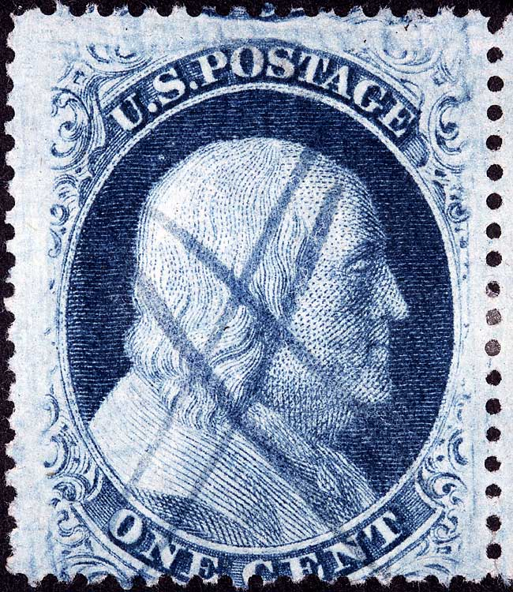
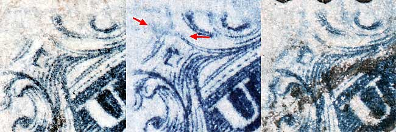
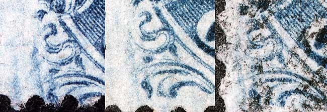
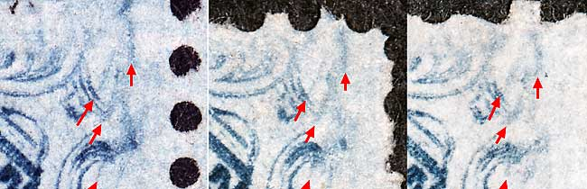
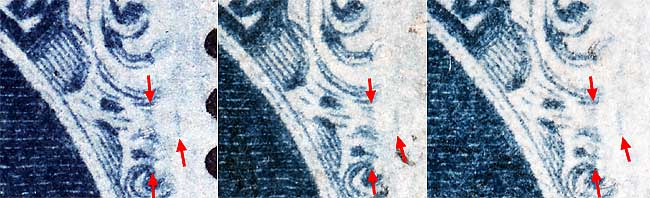
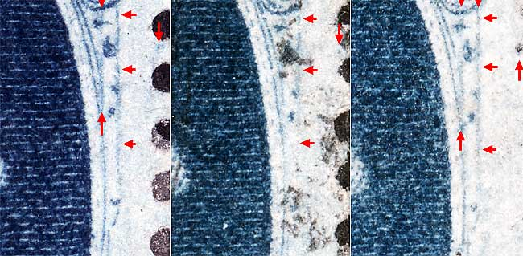
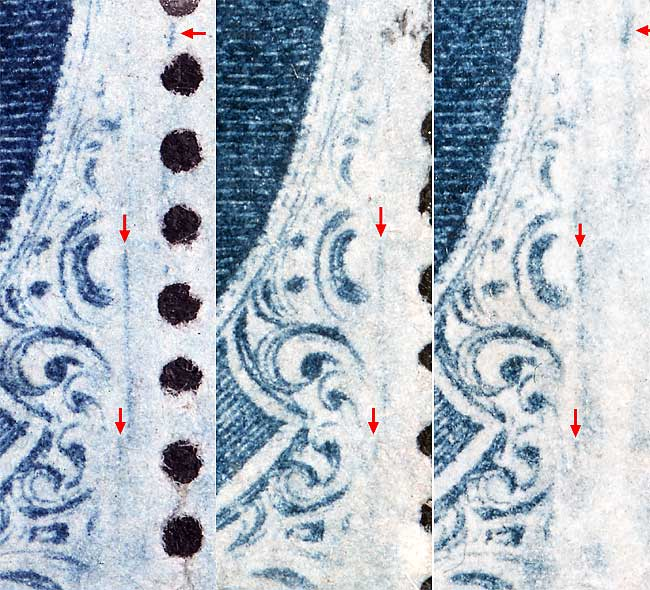

1¢ Franklin Issue of 1857-1861, PLATE 10 Pos 84L10, (Scott #24) |
| Scott #24 Blue, Type V, Relief E Issued only Perforate. Part of a Block of 4, 84L10-85L10, 94L10-95L10 |
|  |
| FIGURE 1. (Below) A faint blurry line of color in Ornament S as illustrated in the Neinken plating diagram.
 |
| FIGURE 2. (Below) A faint blurry lines of color in Ornament H and K as illustrated in the Neinken plating diagram.
 |
| FIGURE 3. (Below) Faint blurry lines of color in and above Ornament L as illustrated in the Neinken plating diagram.
 |
| FIGURE 4. (Below) Faint blurry lines of color in and to the right of Ornament N as illustrated in the Neinken plating diagram.
 |
| FIGURE 5. (Below) Sharp vertical lines of color below Ornament N as illustrated in the Neinken plating diagram.
 |
| FIGURE 6. (Below) Sharp vertical lines of color to the right of Ornament O/P/Q and R as illustrated in the Neinken plating diagram.
 |
| DISCLAIMER and COPYRIGHT INFORMATION: Thanks for visiting this site. I hope you learn something new as we are making new discoveries all the time. You, the visitor, have my permission to link to my pages and to share the INFORMATION with others. The images themselves fall under the fair use guidelines established by the United States Congress and Copyright law. Basically contact us before using. I also ask in return that you send me an e-mail if I have made a mistake, or have made some other technical blunder that in my rush to put these pages up would cause the visitor confusion. Please also visit my other website at www.slingshotvenus.com. and support the live music arts. While your there, be sure to purchase our music. There are not many philatelic rock stars around and we need all the help we can get. :-) I can be reached at: nerdman@ix.netcom.com |